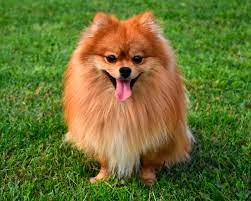
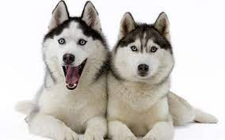

ПОРОДИ СОБАК

- Померанський шпіц
- Тривалість життя: 12–16 років
- Маса: 1,9 – 3,5 кг (дорослі особини)
- Походження: Німеччина (Померанія)
- Зріст: 18—22 см
- Характер: Грайливий, Тямущий, Дружній, Екстравертований, Дружелюбний, Aктивний
Померанський шпіц — декоративна порода собак. Належить до групи шпіців.
Деякі кінологічні федерації розглядають
померанських шпіців як різновид німецького шпіца,
інші виділяють його в окрему породу.
- Лабрадор
- Тривалість життя: 10–12 років
- Маса: cамці: 29–36 кг, самки: 25–32 кг
- Походження: Ньюфаундленд
- самці: 57–62 см, самки: 55–60 см
- Характер: Тямущий, Врівноважений, Компанійський, Добрий, Спритний, Довірливий, Лагідний
- Кольори: Чорний колір, Шоколадний, Жовтий
Лабрадор-ретривер, або коротко «лабрадор» — порода мисливських собак, належить до 8 групи МКФ.

- Сибірський хаскі
- Тривалість життя: 12–15 років
- Маса: самці: 29–36 кг, самки: 25–32 кг
- Походження: Росія (Північно-східний Сибір)
- Зріст: самці: 50–56 см, самки: 54–60 см
- Характер: Тямущий, Дружній, Компанійський, Пильний, Лагідний
- Кольори: Білий колір, Чорний колір, Black & Tan, Black & White, Sable & White, Grey,
Red & White, Gray & White, Silver-gray
Сибірський хаскі — порода собак, заводська спеціалізована порода,
отримана американськими кінологами у 30-х роках 20-го століття, як їздова собака.